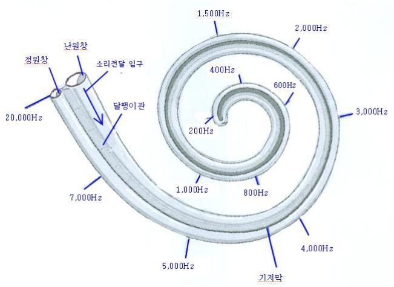

2) 달팽이관의 주파수별 음소처리 위치
달팽이관의 청각세포는 각각 맡아서 처리하는 주파수가 다릅니다. 달팽이관에 도달한 소리는 주파수별로 세밀히 분류되어 각 주파수를 처리하는 청각세포의 위치로 보내집니다. 주파수가 낮을수록 달팽이관의 안쪽에서 처리하고, 주파수가 높을수록 달팽이관의 입구(난원창 가까이)에서 처리합니다(Berard, 1993). <그림 2> 달팽이관의 주파수별 음소처리 위치 참조.
오랫동안 사용되지 않고 방치되는 청각세포는 기능이 퇴화되거나 약화될 수 있습니다. 청각세포가 골고루 자극되어 전체적인 청각기능을 활성화하려면 다양한 주파수의 소리가 투입되어야 합니다. 대부분의 일상생활 소리들의 주파수 대역은 125 ~ 8,000Hz이고, 회화음역은 250 ~ 4,000㎐입니다. AIT의 음악은 30 ~ 15,000 Hz에 해당되어 30Hz를 처리하는 청각세포부터 15,000Hz를 처리하는 청각세포까지 자극하게 됩니다.

<그림 2> 달팽이관의 주파수별 음소처리 위치
!--